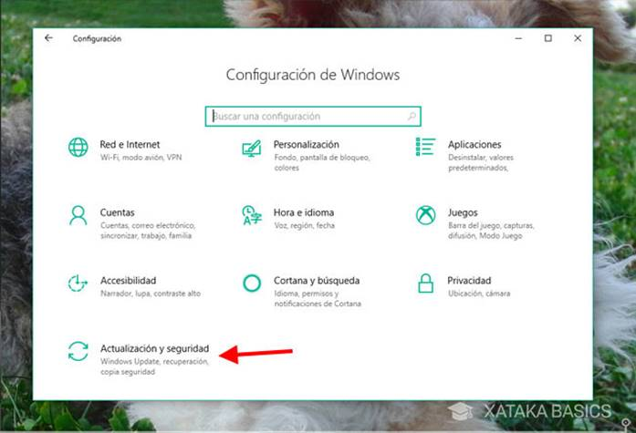
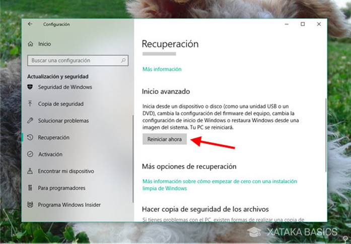

La BIOS posee una interfaz que permite modificar la configuración de la placa madre: el Setup. Se trata de un pequeño programa que se encarga de gestionar los diferentes componentes de la computadora.
El propósito fundamental del BIOS es iniciar y probar el Hardware del sistema y cargar un gestor de aranque o un sistema operativo desde un dispositivo de almacenamiento de datos. Además, el BIOS provee una capa de abstracción para el hardware, por ejemplo, que consiste en una vía para que los programas de aplicaciones y los sistemas operativos interactúen con el teclado y monitor. La configuración de BIOS tiene procedimientos y pasos los cuales son muy importantes ya que nos ayudara a saber si obtuvo más cambios y en cuanto tiempo.
Para poder entrar en la BIOS lo primero que necesitas es llegar al inicio del arranque del PC. La forma más rápida de hacer esto es apagarlo por completo, pues así la próxima vez que se encienda tendrás la opción de entrar en la BIOS pulsando la tecla correspondiente. Para apagar tu PC, pulsa Alt+F4 en el Escritorio o usa el Menú Inicio.
Lo único que debes tener en cuenta es que necesitas apagarlo por completo y no te valdrá con suspenderlo o entrar en hibernación. De hecho, si tu portátil tiene algún tipo de tecnología de "inicio rápido", es posible que el apagado normal tampoco te sirva. En tal caso, sigue leyendo.
Si estás usando Windows y quieres entrar en la BIOS, deberás reiniciarlo. Pero no te vale con un reinicio normal en la mayoría de los casos. Para llevar a cabo un reinicio completo, deberás llevar a cabo una serie de pasos. Primero, haz clic en el menú inicio y luego elige Configuración.

Ya dentro de la Configuración de Windows, deberás dirigirte al último apartado llamado Actualización y seguridad. Es aquí donde se engloban configuraciones similares de recuperación y solución de problemas.

A continuación deberás hacer clic en la pestaña Recuperación (en el panel de la izquierda) y después hacer clic en el botón llamado Reiniciar ahora, debajo del apartado Inicio avanzado. Como se explica en el texto, es un tipo de reinicio especial, que muestra un menú como el que verás a continuación.
Verás entonces el menú con fondo azul del que te hablábamos en nuestro artículo sobre como entra entar en el modo seguro de windows 10. Es un menú que más que nada se usa para resolver problemas con Windows, aunque una de las opciones es precisamente para poder entrar en la BIOS. Haz clic en Solucionar problemas.
A continuación, elige Opciones avanzadas. Esperemos que no necesites entrar en la BIOS con mucha frecuencia pues, como ves, el camino consta de muchos más pasos de los que nos gustaría.
Por último, haz clic en Configuración de firmware UEFI. El nombre en sí no es demasiado intuitivo, pero básicamente quiere decir que reiniciará el PC y te dejará entrar en la configuración del firmware, que viene a ser lo mismo que la BIOS.
Tanto si has apagado el PC y lo has vuelto a encender como si usaste el reinicio avanzado, es posible que necesites pulsar cierta tecla de tu teclado en un momento justo. La tecla puede variar de un PC a otro, aunque suele especificarla durante un corto periodo de tiempo en la pantalla durante el inicio.
La tecla puede ser F1, F2, F10, F11, F12, Esc o alguna combinación tipo Control + Alt + Escape, y lo más fácil es que la pulses sin parar durante el inicio, pues si esperas al momento concreto quizá se te pase. Si no sabes que tecla es y no ves la indicación en la pantalla, una búsqueda en Google de "marca de tu PC + entre BIOS" debería darte la solución. También es posible que esté en el manual del PC.
Si todo va bien verás la pantalla de configuración de la BIOS, que probablemente sea parecida a la anterior. Y decimos probablemente porque realmente el diseño y funciones dependen del fabricante del PC si han decidido crear un diseño más elaborado o usar el viejo clásico como el que se ve en la pantalla anterior. En el caso de ordenadores portátiles, por ejemplo, las opciones disponibles suelen ser mucho más reducidas
IDE
HD
Hard Disk
Hard Drive
Según el modelo
IDE
CD
DVD
CD Drive
DVD Drive
floppy disk
FD
Según el modelo
Desde la red - ésta puede ser:
LAN
Network
Ethernet
Et